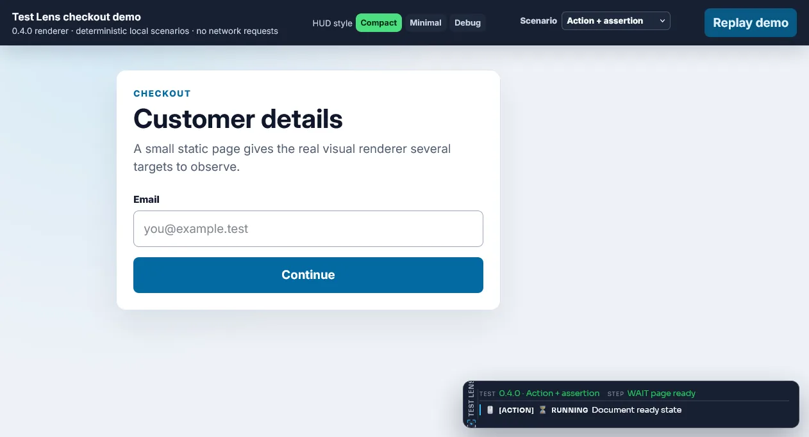
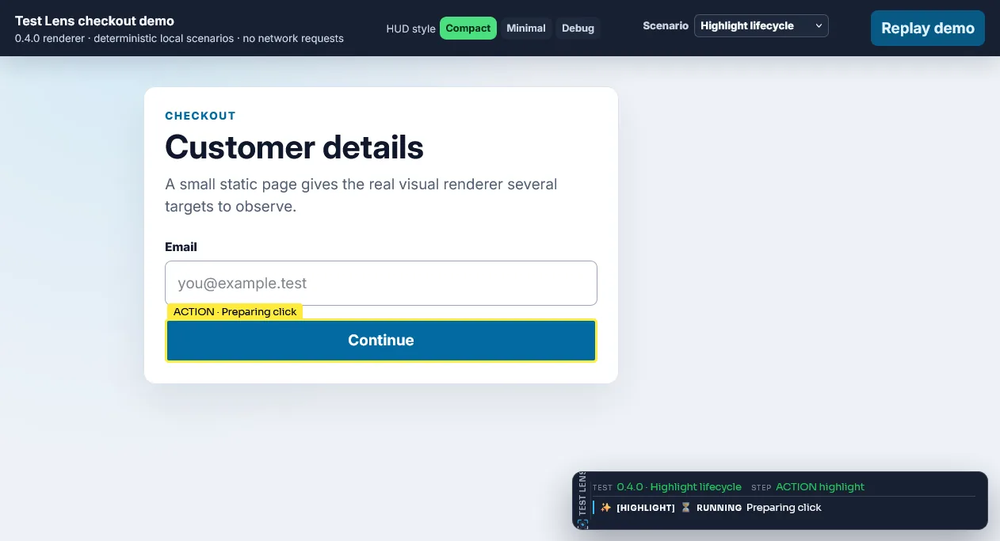

Visual runtime diagnostics¶
Visual diagnostics appear inside the tested page while a test is running. They are most useful during headed local execution and debugging: the browser itself shows what Test Lens is doing, what it is waiting for, and which assertion passed or failed. These diagnostics are transient; persistent output is covered under screenshots and evidence, trace, and reports.
HUD¶
The HUD is an in-browser diagnostic panel displayed over the tested page. It shows the active session, current step, element actions, waits, assertions, and diagnostic log rows so you can follow a test without switching to a console or report.
The standard overlay and HUD are enabled by default. Attach Test Lens and start a session to use them:
The HUD is especially useful when debugging a headed test, demonstrating a flow, or investigating a wait/retry. It does not replace the persistent trace or test-runner output.

The panel observes and presents Lens operations; it does not alter Selenium's success criteria. HUD injection or cleanup failure is decorative and cannot turn an otherwise successful or failed WebDriver operation into the opposite outcome.
Semantic event rows¶
HUD rows distinguish event meaning from log severity. Each visible row includes a textual category and phase plus independent decorative icons. The default category mapping is: ACTION 🖱️, ASSERTION 🧪, LOCATOR 🔎, ACTIONABILITY 🛡️, HIGHLIGHT ✨, USER 💬, and SYSTEM ℹ️. Phases use RUNNING ⏳, PASSED ✅, RETRYING 🔄, WARNING ⚠️, FAILED ❌, INFO ℹ️, and a muted DEBUG marker. Emoji spans are decorative and hidden from assistive technology; textual [CATEGORY] PHASE labels and row roles remain available without color or emoji. Running animation is disabled under prefers-reduced-motion.
User-authored HUD messages may replace only the decorative USER icon: overlay.hudLog("info", "Starting custom step", null, "🚀"). A null, empty, or blank icon inherits the default 💬 icon. The category remains USER, and its independent status icon and [USER] INFO text remain visible. Icons are arbitrary Unicode text, so compound emoji such as ❤️ and 👩💻 are preserved and safely inserted with textContent, never interpreted as HTML.
STANDARD and COMPACT show public operations, assertions, terminal results, real retries, warnings, failures, user messages, and important recovery facts. Successful locator resolution, actionability probes, and highlight-renderer events are filtered before DOM rows are created. DEBUG adds those technical categories with muted DEBUG styling; it does not reinterpret them as functional success. MINIMAL retains its established compact contract and does not enable the event log by default.
STARTED, retry, and terminal events from one public action/assertion carry the same operation ID, so the HUD updates one row from RUNNING through RETRYING to PASSED or FAILED. Two real clicks still have distinct IDs even when they target the same selector. Smart Click's NATIVE → ACTIONS → POINT → JS cascade therefore remains one ACTION; finalStrategy=JS stays diagnostic detail. A successful green outline is HIGHLIGHT/DEBUG, not PASSED.
Action targets use Action :: label :: compact locator without empty segments. An explicit Test Lens label always
wins. Otherwise, live DEFAULT observability may make one best-effort Selenium getAccessibleName() call after
resolution and revise the same operation row, for example Click :: #save to
Click :: Save :: #save. Blank, stale, or failed lookups keep the locator-only form and never affect the Selenium
action result. FAST performs no automatic label command; explicit or already-known labels remain usable. Values
are redacted before HUD delivery and rendered as text. Input values, including password values, are never queried
as label fallbacks.
Compact locators are presentation only: IDs use #id, CSS stays CSS, names use [name="value"], safe single
classes use .class, tags stay tags, XPath uses xpath: ..., and link text uses link: "..." or
link~: "...". Custom, complex, and unsafe-to-compact locators retain a bounded safe display. The canonical
structured locatorObservation strategy/value and its schema are unchanged.
Source Navigation availability remains a SYSTEM warning/info presentation and never becomes a failed test result. Its F8/Escape interaction, links, compatibility refresh, wheel behavior, and native scrollbar remain independent of semantic row updates.
Messages, labels, and icons are inserted as text rather than HTML. The runtime does not inspect message contents to determine category or phase. Unicode is carried unchanged through event metadata, JSON, reports, and the DOM, with emoji fallback fonts applied only to decorative icon spans.
Emoji appearance can vary with the browser, operating system, and installed fonts. Test Lens preserves Unicode and writes built-in and user-entered semantic text as UTF-8; it does not promise identical glyph rendering across platforms. On Windows, use a UTF-8-capable terminal/editor when inspecting exported JSON or logs—the report and HUD encoding remains UTF-8 even if a console code page displays replacement characters.
Raw network rows can be reduced independently with NetworkHudFilter. Its default hides duplicate request rows and shows responses and failures. This affects only the HUD: capture, waits, counters, trace, JSON, reports, external sinks, and failure evidence remain complete.
Configurable HUD¶
For 0.3.0, configure the panel through immutable HudOptions. The default is COMPACT; a preset establishes a coherent base and explicit builder overrides win independently of call order:
HudOptions hud = HudOptions.builder()
.preset(HudPreset.COMPACT)
.position(HudPosition.TOP_RIGHT)
.headerLayout(HudHeaderLayout.AUTO)
.backgroundOpacity(0.88)
.showNetwork(false)
.build();
TestLens lens = TestLens.attach(driver, TestLensOptions.builder()
.hud(hud)
.build());
lens.startSession("Checkout");
MINIMAL, COMPACT, STANDARD, and DEBUG configure content and density. AUTO keeps the atomic TEST and STEP items together on one row when they fit, then moves the complete STEP item to row two; individual values remain single-line and use ellipsis. Runtime clamping keeps configured dimensions and anchored offsets reachable in the current viewport without mutating the stored options.
The API also controls bounded panel/log dimensions, local global and section-specific font stacks, event categories, validated colors, opacity, branding, and native/subtle/standard event-log scrollbars. Presentation filters affect only the HUD; they never delete trace, report, retry, or network data.
Open HUD Studio to edit the same renderer visually and copy matching Java. The complete defaults and ranges are in HudOptions.
HUD timestamps¶
HUD timestamps are presentation-only. They can be enabled or disabled independently of the event timestamps retained by trace and JSON exporters:
HudOptions hud = HudOptions.builder()
.showTimestamps(true)
.timestampPattern("yyyy-MM-dd HH:mm:ss.SSSSSS XXX")
.timestampZone(ZoneId.of("Europe/Warsaw"))
.typography(HudTypography.builder().timestampFontSizePx(10).build())
.build();
| Format | Example | Zone behavior |
|---|---|---|
ISO_UTC |
2026-07-15T22:00:00.000Z |
UTC compatibility default when no explicit zone is configured. |
TIME_ONLY |
00:00:00 |
HH:mm:ss in the selected zone. |
DATE_TIME |
16.07.26 00:00:00 |
dd.MM.yy HH:mm:ss in the selected zone. |
The presets remain convenient shortcuts, but an explicit timestampPattern(...) wins over
timestampFormat(...) regardless of builder call order. Patterns use Java
DateTimeFormatter semantics. In particular, S, SSS, SSSSSS, and SSSSSSSSS display
1, 3, 6, and 9 fraction digits. HUD events retain an Instant, so up to nanosecond precision is
available; the pattern selects how much of that stored precision is visible.
showTimestamps(false) removes the complete timestamp node: no brackets, separator, padding, or
empty grid column remains. It is the COMPACT preset default; STANDARD and DEBUG show
timestamps. By default formatting resolves ZoneId.systemDefault() in the JVM running the test.
Call .timestampZone(zone) for an explicit IANA zone or .systemTimestampZone() to restore
JVM-system behavior. HUD timestamps use the test runner JVM timezone by default, not the browser
machine timezone.
An IANA region such as ZoneId.of("Europe/Warsaw") applies its historical winter/summer rules to
the event Instant automatically (+01:00 in winter, +02:00 in summer). A fixed
ZoneOffset.ofHours(1) always remains +01:00; there is deliberately no separate DST switch.
Timestamp font size is independent from the event message through
HudTypography.timestampFontSizePx(...) (default 9 px, valid range 8–18 px).
Formatting happens once in Java from the event Instant; browser runtime receives the canonical
instant separately from the ready presentation string. Repaint, source-navigation activation, and
HUD reinjection do not replace event time with render time. Changing HUD timestamp presentation
does not alter event instants, ordering, durations, trace JSON, HTML reports, capturedAt, network
timestamps, or evidence metadata. HUD Studio exposes visibility, preset, free-form pattern, zone,
font size, and deterministic winter/summer previews.
Local source navigation¶
Source navigation is opt-in and intended for local debugging:
Path ideRoot = Path.of("D:/Java Projects/selenium-test-lens");
HudOptions hud = HudOptions.builder()
.sourceNavigation(
SourceNavigationOptions.builder()
.enabled(true)
.ide(SourceIde.INTELLIJ)
.intellijProject("selenium-test-lens", ideRoot)
.build())
.build();
Press F8 to toggle Source Navigation on or off; Escape switches it off. Key auto-repeat is ignored, and focused text inputs retain F8. When enabled, source locations become links while wheel/touchpad scrolling, the native scrollbar, text selection, expand/collapse controls, and other HUD controls remain normal. No modifier needs to be held and Source Navigation does not install a wheel handler. The HUD Studio checkbox controls the same temporary preview state as F8/Escape, but it is not emitted to Java; Enable local source navigation is the separate configuration switch that generates SourceNavigationOptions.
SourceNavigationModifier.CTRL_ALT remains available for compatibility with explicit 0.3.1 configurations, but is deprecated. It preserves the original hold behavior exactly: the mode is active only while real Ctrl and Alt state remains set, releasing either key or moving focus away deactivates it, and AltGr/AltGraph never activates it. It does not become a toggle.
The link displays only File.java:line. In the repaired 0.4.0 Studio demo it uses a small local-monospace stack (JetBrains Mono, when installed, then Consolas, ui-monospace, and platform monospace fallbacks) plus a high-contrast purple active treatment with distinct hover and keyboard focus. The published 0.4.0 JAR still uses the configured HUD accent and inherited event font; the matching shared-renderer styling and preservation of an operation's earlier source when a terminal payload omits it require the next library release and are not retroactively injected into Maven 0.4.0. Normal 0.4.0 action/assertion emitters include source metadata on their lifecycle events. The source call site is captured when a user-facing action, wait, assertion, or manual highlight is emitted. Standard multi-module Maven/Gradle Java and Kotlin roots are detected lazily from src/test/java, src/main/java, src/test/kotlin, and src/main/kotlin. Add non-standard roots without publishing absolute paths in event metadata:
SourceNavigationOptions sourceNavigation = SourceNavigationOptions.builder()
.enabled(true)
.ide(SourceIde.VSCODE)
.sourceRoots(
Path.of("acceptance/src/test/java"),
Path.of("shared/src/main/kotlin"))
.build();
| Provider | Behavior |
|---|---|
INTELLIJ |
Uses the JetBrains jetbrains://idea/navigate/reference handler with an exact project identity and project-relative path. |
VSCODE |
Uses the local vscode://file protocol handler. |
CUSTOM |
Uses customUriTemplate(...) with {file}, {line}, and {column} placeholders. The template is configured programmatically; Studio selects the provider but does not edit the template. |
For IntelliJ IDEA, configure the project identity IntelliJ expects, not the worktree directory name. intellijProject(name, root) is explicit and recommended for worktrees and multi-module builds. Without it, Test Lens walks upward for .idea/.name; it never guesses the project from a directory name. The resolved file must exist beneath the configured project root. The URI path is project-relative and includes :line and an optional :column, with query values URL-encoded for spaces, Windows paths, and non-ASCII characters.
IntelliJ compatibility and preflight¶
IntelliJ navigation requires JetBrains' jetbrains:// protocol. Known supported setups are:
- IntelliJ IDEA 2026.1 or newer bundles
jetbrainsd; JetBrains Toolbox is not required for these versions; - IntelliJ IDEA older than 2026.1 requires JetBrains Toolbox App 3.3 or newer to provide and start
jetbrainsdand registerjetbrains://handling for supported installed IDEs.
jetbrainsd receives the operating-system protocol request and forwards it to Toolbox or the IDE. IDEA 2026.1+ supplies this component itself, so installing Toolbox is unnecessary. Standalone IntelliJ releases before 2026.1 may not register the protocol themselves; for those releases, install or update Toolbox to 3.3+, keep Toolbox running, and retry the HUD compatibility check, or update IntelliJ IDEA to 2026.1+.
On Windows, Test Lens performs a bounded, best-effort preflight when Source Navigation starts. It checks the jetbrains protocol registration, a running or installed jetbrainsd, and IntelliJ product metadata. An explicitly configured installation can be supplied to the test JVM with -Dtestlens.intellij.home=<IDE home> or -Dtestlens.intellij.executable=<path to idea64.exe>; otherwise the probe may inspect a running IDEA process. Product name, version, and build come from the installation's product-info.json, never from a guessed directory name. Other operating systems currently report the environment as unverified rather than blocking a potentially valid link.
The HUD distinguishes three outcomes:
- Ready: the protocol handler and project mapping were verified; links dispatch normally.
- Action required: a required handler, daemon, mapping, root, or source file is known to be unavailable; links remain disabled and compatibility details provide the corrective action.
- Availability unverified: local probing could not establish protocol availability; navigation remains available, but the HUD labels the request as unverified.
The compatibility summary is emitted once per state change to the Java logger and HUD event stream. Retry compatibility check re-runs the lightweight probe on the next HUD update, so starting Toolbox or IntelliJ does not require restarting the browser session. Detailed executable paths, resolved source paths, and generated URIs remain at FINE logging only.
For advanced Windows troubleshooting, compare the HUD result with:
Get-Process | Where-Object {
$_.ProcessName -match "jetbrainsd|toolbox|idea"
}
Get-Item "Registry::HKEY_CLASSES_ROOT\jetbrains" -ErrorAction SilentlyContinue
Get-ChildItem "$env:LOCALAPPDATA\JetBrains\Daemon\bundles\current" `
-ErrorAction SilentlyContinue
A running jetbrainsd or a populated daemon bundle plus a registered HKEY_CLASSES_ROOT\jetbrains protocol indicates that the local transport is available. For IDEA 2026.1+, Toolbox is not required: start or restart IDEA once and retry the compatibility check if registration is missing. If an older IDEA release such as 2025.2.5 is running but all three checks are absent, install/run Toolbox 3.3+ or update IDEA to 2026.1+.
Local file resolution and protocol navigation are best-effort and never change the test result. If the project mapping, source path, line, or file is invalid, the File.java:line text remains visible but is not a link. Remote WebDriver sessions may likewise show the logical label without an active local IDE target. Clicking a valid link synchronously requests the custom protocol from the real user gesture; the HUD reports Source navigation requested, not success, because a webpage cannot confirm that the IDE accepted it. Browsers may show an external-protocol confirmation prompt.
Enable FINE logging for io.github.testlens.source-navigation to inspect the provider, project, logical path, resolved IDE path, line, column, and final URI. You can also right-click a source link and copy its link address. Test that URI independently in the browser or Windows Run dialog:
- If Windows reports that no application can open it, install/run JetBrains Toolbox 3.3+ or update IntelliJ IDEA to 2026.1+, then use Retry compatibility check.
- If IDEA opens but selects no project, correct
intellijProject(...)or.idea/.name. - If the project opens but the file does not, correct the project root/source roots and inspect the resolved path diagnostic.
- As a diagnostic only, compare with
idea64.exe --line <line> --column <column> <file>; the browser never executes this command.
Contributor headed-debug check¶
To exercise the real HUD manually, run the existing Source Navigation browser contract in a headed Chrome session:
mvn -f selenium-test-lens-browser-tests/pom.xml -Dbrowser=chrome -Dheaded=true "-Dit.test=RealBrowserContractsIT#hudSourceNavigationF8ToggleKeepsScrollingControlsAndDirectLinksUsable" test-compile failsafe:integration-test failsafe:verify
For an interactive debugging pass, launch the same Maven goal from the IDE debugger and place a breakpoint in RealBrowserContractsIT#hudSourceNavigationF8ToggleKeepsScrollingControlsAndDirectLinksUsable immediately before the source-location .click() that dispatches navigation. While execution is paused, use the headed browser to toggle Source Navigation, inspect compatibility details, scroll and drag the native HUD scrollbar, and exercise ordinary HUD controls; then resume to run the contract assertions. This is a contributor workflow only—production code contains no pause or debug behavior.
IDE foreground activation remains subject to browser and Windows focus policy. Test Lens uses the supported JetBrains URI and does not use executable launching or focus hacks.
The actionable URI is rendered as the source anchor's href so dispatch remains synchronous and users can copy it for diagnostics. IntelliJ URIs contain only the project identity and project-relative target; exported events retain only class, method, file name, and line number. Absolute local paths and IDE URIs are not written to reports, JSON traces, or evidence.
Use OverlayConfig for the master visual switch, HUD visibility, highlight behavior, and legacy compatibility. To hide only the HUD while retaining click decoration:
To disable all visual overlay behavior:
See Getting Started and the complete OverlayConfig table.
TestLens.startSession(...) attempts the initial HUD injection. Events retry injection lazily when a browser document was not available earlier, such as around navigation. When TestLensOptions.cleanupHudOnFinish is enabled, finalization removes HUD/debug artifacts on a best-effort basis. Injection and cleanup failures do not change the WebDriver operation's intended result.
State-aware highlights¶
A highlight is a temporary border/label drawn around an element so you can see which DOM target Test Lens selected. It is useful when a selector matches an unexpected element or a click is intercepted by page UI.
The 0.3.1 HighlightOptions model controls manual decoration and automatic operation feedback:
HighlightOptions highlights = HighlightOptions.builder()
.enabled(true)
.automaticFeedback(true)
.actionColor("#ffeb3b")
.waitingColor("#2196f3")
.retryColor("#ff9800")
.successColor("#4caf50")
.failureColor("#f44336")
.durationMs(1500)
.actionDurationMs(500)
.retryDurationMs(800)
.successDurationMs(1500)
.failureDurationMs(2500)
.borderWidthPx(2)
.showLabels(true)
.build();
TestLensOptions options = TestLensOptions.builder()
.highlights(highlights)
.build();
The five state-specific durations are optional overrides; the colors, common 1500 ms duration, 2 px border, and enabled switches shown above remain the defaults. Resolution is: explicit state override, then durationMs(...), then the existing legacy/default duration. Setter order does not change that precedence. durationOverrideMs(state) reports whether a state is explicit, effectiveDurationMs(state) returns the resolved value, and clearDurationOverride(state) restores inheritance. An explicit state override of zero suppresses only that visual state. The historical common durationMs(0) contract is unchanged: it still renders and schedules removal with zero delay. Border width accepts 1 through 16 CSS pixels.
| State | Default | Shown when | It does not mean |
|---|---|---|---|
ACTION |
#ffeb3b |
The concrete action is attempted, or a caller requests a neutral manual highlight. | A manual ACTION is not proof that an interaction occurred. |
WAITING |
#2196f3 |
An operation is waiting for its condition or next observation. | It is not a failure and does not mark the session flaky. |
RETRY |
#ff9800 |
A genuine subsequent operation/recovery attempt begins. | It is not every ordinary wait or assertion polling observation. |
SUCCESS |
#4caf50 |
The concrete action, wait, or assertion completes successfully. | A successful click proves only that the action call completed, not that the intended business result occurred. |
FAILURE |
#f44336 |
The operation reaches its final failure, timeout, or assertion failure. | It is not an intermediate miss that can still recover. |
enabled(false) disables both manual and automatic element decorations. automaticFeedback(false) leaves the manual API available but suppresses automatic ACTION/WAITING/RETRY/SUCCESS/FAILURE feedback. Hiding only the HUD with OverlayConfig.showHudPanel(false) does not disable highlights. The master OverlayConfig.enabled(false) disables all overlay visuals, including HUD and highlights.
One public operation owns one feedback lifecycle. A click, fill, clear, select, explicit wait/assertion, or manual highlight may be user-visible; locator re-resolution, stale refresh, visibility/enabled probes, routine polling, hit-testing, Smart Click strategy transitions, and geometry refresh are diagnostic-only. For example, NATIVE → ACTIONS → POINT → JS remains one click with one ACTION and one terminal result. Its selected strategy is retained in operation details, but it does not create extra outlines or HUD action rows.
Presentation is asynchronous and never extends the WebDriver operation timeout. If a 20 ms click completes while ACTION has 500 ms configured, ACTION finishes its own 500 ms display and the pending SUCCESS then receives its complete duration. Each decoration is revision-owned: an old timer or late transitional callback cannot remove or repaint a newer terminal state. Rapid independent operations execute immediately; their visuals are ordered locally for the same target, while different targets do not clear each other. Repeated pending transitions are collapsed and each target has a bounded visual backlog; under overload an unshown visual may be dropped at DEBUG level without dropping trace/log results or blocking the action.

Geometry refresh preserves state, revision, and deadline. Explicit clear, disabled highlights/overlay, session finish, navigation/document loss, or target detach may end presentation early and cancel pending work. DEBUG/TRACE keeps internal probe details but does not re-enable internal visual noise.
Manual decoration is interaction-free:
lens.locator(By.id("status"), "Order status").highlight();
lens.highlight(element, "Order status");
lens.highlight(element, "Saved", HighlightState.SUCCESS);
These calls do not click, type, focus, or scroll. Manual ACTION remains neutral. Manual SUCCESS chooses a visual state only: it emits a highlight diagnostic and never invents ASSERTION_PASSED or changes the test result.
The highlight uses a pointer-transparent overlay. It does not click, receive the click, change the target's state, or make the element actionable. The standard activation contract is the bounded Smart Click cascade described above; highlight scheduling does not add or repeat a click.
For compatibility, OverlayConfig.highlightColor(...) supplies actionColor and decorationDurationMs(...) supplies durationMs only when that typed field was not explicitly set. Explicit HighlightOptions fields win regardless of builder call order. The legacy duration continues to control arrows and other historical decorations. UiLocatorOptions.highlightBeforeAction() remains a retained option but is not consulted by the current locator implementation.
HUD Studio configures and previews all five states. The lower-level parent/closest helpers remain documented under advanced explicit visual helpers.
Wait feedback¶
Wait feedback shows that a condition is still being polled and reports its progress through the HUD/log/trace pipeline. It appears during explicit element waits and relevant retry loops, helping distinguish an active wait from a stalled test.
The visual feedback does not change the Selenium condition, polling interval, or deadline. Configure those through UiLocatorOptions.timeout(...) and pollInterval(...).
Assertion feedback¶
Assertion feedback makes fluent assertion progress visible. Reporter events distinguish assertion start, retries, pass, timeout, and failure, which is useful when an expected UI state arrives late or never appears.
Assertions use their own polling and comparison settings. See Element assertions and UiAssertionOptions. Diagnostic previews are bounded by the options, but page content and screenshots can still expose sensitive values.
Legacy HUD theme and placement compatibility¶
OverlayConfig HUD position, offset, width, and HudTheme remain available for 0.2.x source compatibility:
OverlayConfig overlayConfig = OverlayConfig.builder()
.hudPosition(HudPosition.TOP_RIGHT)
.hudTheme(HudThemePreset.HIGH_CONTRAST)
.build();
When explicit HudOptions and legacy HUD setters are combined, HudOptions is authoritative for every overlapping value regardless of builder call order. Without explicit HudOptions, legacy settings retain their historical behavior. Custom HudTheme strings are trusted CSS; new code should prefer the bounded product model generated by HUD Studio.
Low-level HUD API¶
HudPanel, ApiOverlayPanel, JS resource wrappers, OverlayRootManager, and related *Js types are formally public but intended for custom integrations and internal-style use. See advanced/low-level API.